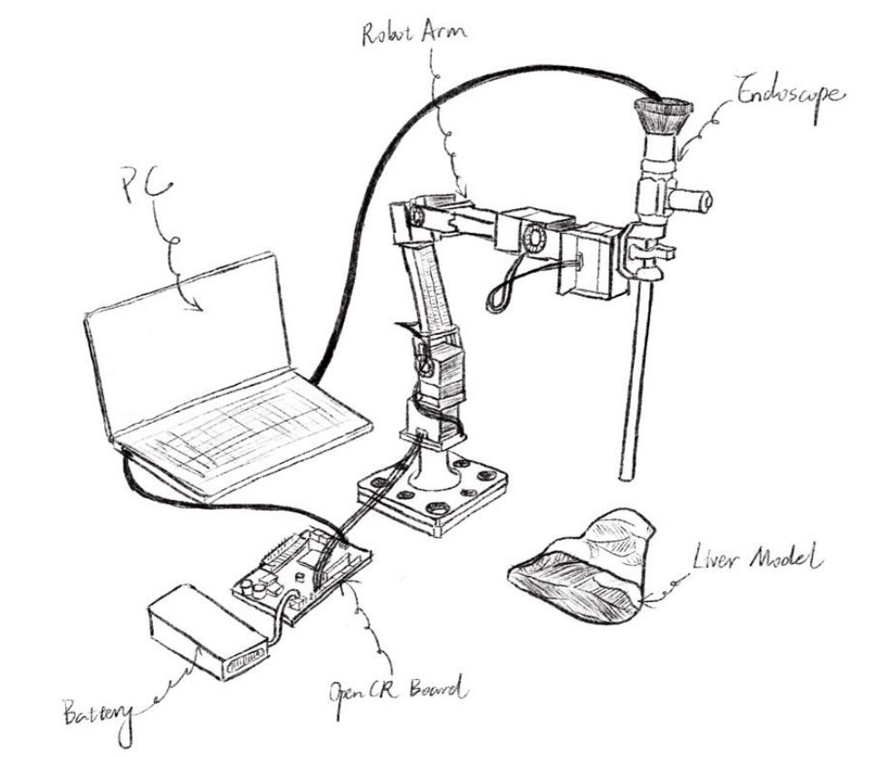

|
Jianhan(Jaime) Ma I'm currently a second year M.S. student at the Electrical & Computer Engineering department of UC San Diego, advised by Prof. Xiaolong Wang , working on robotic learning techniques deployed on quadruped robots. Prior to enrolling in UCSD, I worked on computer vision in medical image processing under the supervison of Prof. Zhuozhu Liu at Zhejiang University . I obtained my Bachelor of Engineering(B.E) dgree in Electrical Engineering and its Automation at Zhejiang University in 2021. Email / CV / Google Scholar / Twitter / Github / Linkedin / Instagram |
{kind=link}
ResearchI'm interested in reinforcement learning, computer vision, and advanced locomotion. * denotes equal contribution |

|
Generalized Animal Imitator: Agile Locomotion with Versatile Motion Prior
Ruihan Yang*, Zhuoqun Chen*, Jianhan Ma*, Chongyi Zheng*, Yiyu Chen, Quan Nguyen, Xiaolong Wang In submission to ICRA 2024 CoRL 2023 Deployable Workshop (Best Paper Award) Project Page / arXiv / Video Our system learns a Single Instructable Motion Prior from a diverse reference motion dataset. |
Selected Projects |
|  |
Camera-based Augmented Reality Endoscope Auxiliary System
Advisor: Prof. Liangjing Yang Project Report We engineered a sophisticated Augmented Reality (AR) auxiliary system designed to accurately track and tag tumor locations in real-time. This system was adeptly integrated with the vision system of an endoscope mounted on an OpenManipulator-X robot arm. It effectively displayed the pinpointed tumor locations directly onto the endoscope’s visual feed, enhancing precision and guidance during medical proce |
Education |

|
UC San Diego, San Diego, CA 2022.9 - Present M.S in Electrical & Computer Engineering |

|
Zhejiang University, Hangzhou, China 2017.8 - 2021.6 B.E in Electrical Engineering and its Automation |
Teaching |

|
Spring 2021
Teaching Assistant, ECE 342 & 343 - Electronic Circuits Instructor: Prof. Aili Wang Fall 2020 Teaching Assistant, ECE 313 - Probability with Engineering Application Instructor: Prof. Mark Butala |
|
Borrowed from John Barron. |